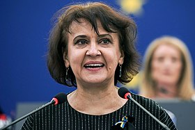
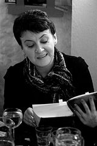

Забужко Оксана Стефанівна
| Забужко Оксана Стефанівна |
|  |
| Ім'я при народженні |
Оксана Стефанівна Забужко |
| Народилася |
19 вересня 1960 (63 роки)
Луцьк, Волинська область, Українська РСР |
| Громадянство |
Україна |
| Національність |
українка |
| Діяльність |
письменниця, літературознавиця, публіцистка, поетеса, есеїстка, феміністка, літературний критик, громадська активістка, викладачка |
| Сфера роботи |
поезія |
| Alma mater |
філософський факультет Київського національного університету імені Тараса Шевченка |
| Заклад |
Гарвардський університет і Університет Піттсбурга |
| Мова творів |
українська |
| Роки активності |
з 1985 |
| Напрямок |
постмодернізм |
| Жанр |
поезія і проза |
| Magnum opus |
«Музей покинутих секретів» (2009)
«Польові дослідження з українського сексу» (1996) |
| Партія |
КПРС |
Окса́на Стефа́нівна Забу́жко (нар. 19 вересня 1960, Луцьк, Волинська область, Українська РСР) — українська письменниця, феміністська літературознавиця, поетеса, есеїстка, публіцистка, викладачка та політична активістка (зокрема, в часи Помаранчевої революції). Ключовими у творчості Оксани Забужко є теми української національної ідентичності і гендеру[2].
Твори Забужко перекладені понад 20 мовами в Австрії, Болгарії, Італії, Ірані, Нідерландах, Німеччині, Польщі, Росії, Румунії, Сербії, США, Угорщині, Франції, Хорватії, Чехії, Швеції.[3] Роман «Польові дослідження з українського сексу» (1996), перший бестселер незалежної України, дав старт українському книжковому ринку, є найширше перекладеним у світі українським прозовим твором[4][5]. Інтелектуальний нонфікшн «Notre Dame d'Ukraine: Українка в конфлікті міфологій» (2007) осмислює українську культурну історію через Лесю Українку як «Іншого», через чий лицарський дискурс вписує Україну у систему європейських міфологій, досліджуючи українську шляхту. «Музей покинутих секретів» (2009) в орієнтованому на західну аудиторію деколонізує українську історію, зокрема, УПА[6] з застосуванням жіночого письма та écriture féminine.
Оксана Забужко є лауреаткою народних та іноземних премій, стипендіаткою Фулбрайта, викладачкою українських студій у Гарвардському та Піттсбурзькому університетах та популяризаторкою України на міжнародній арені. Її тексти адаптують численні театри України, Європи і Північної Америки.
Життєпис
Народилася 19 вересня 1960 року в місті Луцьку, у шістдесятницькій родині з давніми історичними традиціями.

Батько, Стефан (Степан) Іванович Забужко (1926—1983) — педагог, літературний критик і перекладач (вперше переклав українською чеські оповідання Іллі Гурніка[8], у сталінські часи був репресований і відбував заслання в Забайкальському краї). Мати, Надія Яківна Обжирко-Забужко (1926—2014) — родом з м. Білилівка Бердичівської округи, вчителька української літератури, авторка методичних розробок і популярних літературознавчих творів для школярства[9]. За словами Євгена Сверстюка, Забужко вихована на «кращих естетичних традиціях». Змалечку складала вірші, які записував і збирав її батько[10].
За словами письменниці, свою філологічну освіту вона отримала вдома. Розпочаті у вересні 1965 р. репресії проти української інтелігенції змусили родину покинути Луцьк[11], і з 1968 р. Оксана Забужко мешкає в Києві.
Закінчила філософський факультет (1977—1982) та аспірантуру з естетики (1985) Київського університету імені Тараса Шевченка.
1987 року прийнята до Спілки письменників СРСР. Вступила до КПРС не пізніше 1988 року[12].
Захистила кандидатську дисертацію на тему «Естетична природа лірики як роду мистецтва» (1987). Викладала естетику й історію культури в Київській державній консерваторії ім. П. Чайковського (1986—1988), з 1989 р. — старша наукова співробітниця Інституту філософії НАН України.
1992 року викладала українську культуру в Університеті штату Пенсільванія як запрошена письменниця. У 1994 отримала стипендію Фонду Фулбрайта і викладала українську літературу й культуру у Гарвардському та Піттсбурзькому університетах. 2001 року викладала літературну майстерність у Київському національному університеті імені Тараса Шевченка.
У шлюбі з художником Ростиславом Лужецьким